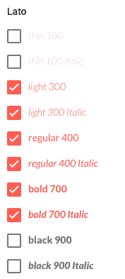

Uso legal, instalação e extensões de fontes
TrueType
Criada nos anos 80 pela Apple e implementada pela Microsoft no Windows 3.1, são fontes altamente escaláveis e leves em conjunto de caracteres. São as fontes mais comuns de entrar, sua extensão é .ttf.
OpenType
As fontes OpenType foram criadas pela Microsoft em 1994, baseadas nas fontes TrueType, com a intenção de suportar um maior número de caracteres e outros idiomas. Sua extensão é .otf.
PostScript
Este tipo de fonte foi criado pela Adobe e é voltada principalmente para impressão, pois possui alta definição e grande compatibilidade com impressoras. Ela é encontrada em grupos de arquivos. No Windows e no Mac, as seguintes extensões compõem a fonte: .afm, .pfb e .pfm. Já no Linux, as extensões são: .pfa e .afm
As fontes possuem licenças
Assim como o uso de imagens, para o uso de fontes é necessário possuir licenças. Existem fontes pagas, além de outras com licença gratuita para uso não-comercial e de licença 100% livre. Neste curso, por exemplo, vamos utilizar a fonte Rounded Elegance, que possui licença 100% livre e pode ser encontrada no site dafont.com, uma ótima referência para pesquisar e encontrar fontes.
Acesse o link e baixe a fonte em seu computador.
Já baixou a fonte?
Se você já está com o arquivo da fonte em seus downloads, siga para o próximo passo.
Seguir
Incorporando uma fonte em seu site
Para utilizar uma fonte em uma página da web, é necessário que ela esteja incorporada ao site, pois caso o usuário não a tenha em seu computador, a página carregará com outra fonte. Para isto, podemos utilizar uma propriedade CSS, como também podemos incorporar a fonte por meio de um serviço online.
@font-face
A propriedade CSS @font-face permite que adicionemos fontes específicas em nosso site e o usuário poderá vê-las mesmo que não as tenha em seu computador. Vejamos como isso funciona com a fonte Rounded Elegance.
Acesse o arquivo tipografia.css e adicione o seguinte:
@font-face{
font-family: 'Rounded Elegance';
src: url('../fonts/Rounded_Elegance.ttf');
}
Vamos estilizar todos os títulos e os itens do menu de navegação de nosso site com a fonte que incorporamos, em seguida, iremos inserir no CSS:
.titulo-de-capitulo,
.titulo-peso-2,
.titulo-peso-3,
.titulo-peso-4,
.menu-itens li{
font-family: 'Rounded Elegance', 'Century Gothic', 'CenturyGothic', 'AppleGothic', 'Trebuchet MS', sans-serif;
font-weight: normal;
}
Definimos que o font-weight é normal para resetar o comportamento padrão dos títulos. Também definimos outras fontes que poderão substituir a que escolhemos, caso ela não seja encontrada ou renderizada pelo navegador do usuário. Uma boa referência para saber quais são as fontes mais comuns nos computadores é o site CSS Font Stack.
Incorporando fontes com variações de peso e estilo
Para adicionar variações da fonte, podemos incorporar os arquivos correspondentes aos demais estilos e dar um nome diferente para a variação da fonte na propriedade @font-face. Se quisermos que a fonte tenha o mesmo nome, mas aceite outras propriedades corretamente, devemos declarar as propriedades font-weight e font-style no @font-face referente àquela fonte.
Se você testou esta página em um navegador atual, deve ter visto a fonte incorporada corretamente em todos os títulos (só a introdução que possui classes personalizadas). Mas, como nem tudo na internet é simples, o ideal é que seja incorporado outros formatos de fontes para que funcionem como desejamos para a maior parte dos usuários. O css @font-face ficará assim:
@font-face{
font-family: 'Rounded Elegance';
src: url('../fonts/Rounded_Elegance.eot'); /* Modo compatível com IE 9 */
src: url('../fonts/Rounded_Elegance.eot?#iefix') format('embedded-opentype'), /* IE6 e IE8 */
url('../fonts/Rounded_Elegance.woff2') format('woff2'), /* Browsers mais recentes */
url('../fonts/Rounded_Elegance.woff') format('woff'), /* Browsers recentes */
url('../fonts/Rounded_Elegance.ttf') format('truetype'), /* Safari, Android e iOS */
url('../fonts/Rounded_Elegance.svg#svgFontName') format('svg'); /* iOS anteriores */
}
Com isso damos suporte à maioria dos navegadores.
| Formato / Navegador |
IE |
Chrome |
Firefox |
Safari |
Opera |
| TTF/OTF |
9.0* |
4.0 |
3.5 |
3.1 |
10.0 |
| WOFF |
9.0 |
5.0 |
3.6 |
5.1 |
11.1 |
| WOFF2 |
Não suporta |
36.0 |
35.0* |
Não suporta |
26.0 |
| SVG |
Não suporta |
4.0 |
Não suporta |
3.2 |
9.0 |
| EOT |
6.0 |
Não suporta |
Não suporta |
Não suporta |
Não suporta |
* IE: O formato da fonte só funciona quando definido para ser "instalável".
* Firefox: Não suportado por padrão, mas pode ser ativado nas configurações do navegador.
Conversores de fontes
Você pode encontrar inúmeros conversores de fontes como o Font2Web, o Web Font Generator, ou o Transformer.org. Basta certificar-se de que a fonte que escolheu é domínio público e pode convertê-la para utilizá-la em seu sistema.
Google Fonts
Também é possível utilizar fontes específicas incorporadas de serviços como o Google Fonts.
Neste curso, por exemplo, vamos incorporar a fonte Lato. Esta combina com a fonte dos títulos sem grandes variações — seu formato também é arredondado, no entanto é mais fino. Vamos selecionar os estilos Light 300, Light 300 Italic, Normal 400, Normal 400 Italic, Bold 700 e Bold 700 Italic, com isso teremos três pesos e suas variações para o itálico:

O próprio Google Fonts nos dá o seguinte código para adicionarmos ao Header:
<link href="https://fonts.googleapis.com/css?family=Lato:300,300i,400,400i,700,700i" rel="stylesheet">
Então, vamos também definir o font-family do body no tipografia.css:
body{
font-family: 'Lato', 'Trebuchet MS', 'Arial', sans-serif;
}
Todas as fontes que não tinham sido estilizadas em nosso arquivo mudaram (basicamente, os parágrafos, as listas e a tabela). Vamos deixar os parágrafos e listas ainda mais suaves e agradáveis para a leitura? Então, defina o seguinte no tipografia.css:
p,
li{
font-weight: 300;
}
Repare como a leitura dos parágrafos, ou seja, de qualquer volume considerável de texto, ficou mais agradável. Ao diminuirmos a espessura da letra, conseguimos um texto menos denso. Mas tenha cuidado ao utilizar a espessura mais fina das fontes. Caso esta fique muito fina, poderá prejudicar a legibilidade.
A altura da linha (line-height) e a adição de uma margem entre os parágrafos são alguns fatores interessantes que contribuem para a boa continuidade na leitura.
Incorporando mais estilos
Na etapa seguinte, a de composições, veremos como criar novas combinações de fontes. Para isso, vamos incorporar também as fontes Roboto Slab 300, 400 e 700, e Droid Serif 400, 400 itálico, 700 e 700 itálico. É necessário substituir o código que incluímos no header por:
<link href="https://fonts.googleapis.com/css?family=Droid+Serif:400,400i,700,700i|Lato:300,300i,400,400i,700,700i|Roboto+Slab:300,400,700" rel="stylesheet">
É importante lembrar que, quanto maior o número de fontes incorporadas em uma página, maior será o tempo para carregar. Além disso, as fontes carregadas diretamente do Google Fontes podem fazer com que a sua página demore mais para carregar, pois dependem de outro servidor.
Como instalar fontes em seu computador
Para utilizar uma fonte em uma página da web, não precisamos que ela esteja instalada no computador – o próprio navegador renderiza as fontes incorporadas. Mas, caso precisemos utilizar determinada fonte em outro software, ela deve estar instalada no computador. Se for necessário, basta seguir os passos descritos abaixo, de acordo com o seu sistema operacional.

OS (Mac)
Modo 1
- Clique duas vezes sobre a fonte que deseja instalar;
- Uma janela se abrirá, clique em instalar fonte.
Modo 2
- Abra o aplicativo Catálogo de Fontes (Fontbook);
- Arraste as fontes que deseja instalar para lá;
- As fontes que forem instaladas, podem ser vistas na aba Usuário (User).

Windows (Microsoft)
Modo 1
- Clique com o botão direito sobre a fonte desejada;
- Selecione a opção instalar.
Modo 2
- Acesse c:\Windows\Fonts;
- Copie ou mova a fonte que deseja instalar para lá.

Ubuntu (Linux)
- Acesse o diretório /usr/share/fonts/;
- Copie ou mova o arquivo da fonte para lá;